EVA: Introduction
From a commercial standpoint, Economic Value Added (EVA™) is the most successful performance metric used by companies and their consultants. Although much of its popularity is a result of able marketing and deployment by Stern Stewart, owner of the trademark, the metric is justified by financial theory and consistent with valuation principles, which are important to any investor's analysis of a company.
To many, the EVA™ metric (also known as "economic profit") basks in a mystique of complexity. But this tutorial will show you that this complexity is only an illusion. In fact, the entire metric is a development of three simple ideas: cash is king; some expense dollars are really investments in "disguise"; and equity capital is expensive.
To help you understand EVA™ and its components, we devote each chapter of this tutorial to exploring a different conceptual aspect of economic value added (EVA™) and demonstrating the associated calculations. Over the course of these chapters, we build an EVA™ calculation for the Walt Disney Co (DIS), a publicly traded company, using recent financial statements. And, at the end of this study of EVA™, we compare it to other performance metrics.
By the end of this tutorial, you will not only be able to calculate EVA™ for yourself, but also, importantly, understand its strengths and weaknesses, observing how it is ideal for some situations, but also - contrary to some dogma - not necessarily the best performance metric for many other situations.
Because the term EVA™ is trademarked, for convenience's sake, we will instead refer to it as economic profit throughout the tutorial. This is a common practice and, for our purposes, there is no difference.
EVA: Overview
By David Harper, (Contributing Editor- Investopedia Advisor)
Examining the components of economic profit and studying the finer points of its calculation require an understanding of its underlying principles. Here we look at how it matters as a performance measure - which is distinct from a wealth metric - and how it is closely related to market value added (MVA). Finally, in establishing an overall picture of economic profit, we help you undo any perceived complexity by showing how all of the calculations surrounding economic profit originate from three main ideas.
Economic Profit Is a Performance Metric
To understand economic profit, it helps to distinguish between a performance metric and a wealth metric. A performance metric refers to a measure under company control, such as earnings or return on capital. A wealth metric, on the other hand, is a measure of value that - such as equity market capitalization or the price-to-earnings (P/E) multiple -depends on the stock market's collective and forward-looking view. Now, although these two types of metrics are distinct, they are related.
Every performance metric has a corresponding wealth metric. In theory, over the long run, a performance metric can be expected to impact its corresponding wealth metric. For example, consider the matching pair of earnings per share (EPS), a fundamental performance metric, and the P/E multiple, its corresponding wealth metric. The variables that determine EPS - earnings and shares outstanding - are numbers affected only by the company's actions and decisions. On the other hand, the P/E multiple, which is determined by the company's stock price, depends on the value of these actions and decisions assigned by the stock market. The company therefore influences the P/E ratio but cannot fully control it. Here is another way to think about the difference between the two: EPS is a current (or historical) fact but P/E is a forward-looking and collective opinion.
The key criterion for the pairing of a performance and wealth metric is consistency: each half of the pair should reference the same group of capital holders and their respective claims' on company assets. For example, EPS by definition concerns the allocation of earnings to common shareholders; the P/E multiple refers to equity market capitalization, which is the value held by shareholders.
Consider another example: return on capital (ROC) is a performance metric that represents the return both to debt and stockholders, and its corresponding wealth metric is the EBITDA multiple - the value of total debt, plus equity market capitalization (also known as the "enterprise value" or "entity value"), divided by earnings before interest, taxes, depreciation and amortization (EBITDA). This is also called the "price-to-EBIDTA multiple", or "the enterprise multiple". Note how ROC and the EBITDA multiple meet the consistency test. Like ROC, EBITDA captures earnings that accrue to both holders of stock and debt. The EBITDA multiple, therefore, reveals how the market values the company in light of earnings to stockholders and debt-holders.
Below is a chart listing a few performance metrics and their corresponding wealth metrics. Note that economic profit's corresponding wealth metric is market value added (MVA). We explore this relationship below as we come to understand specifically what economic value is and how works:
| Performance metric | Wealth metric |
| Return on Equity (ROE), EPS growth | P/E Ratio |
| Return on Capital (ROC or ROIC), Operating Income Growth | Ratio of: Entity value ÷ EBITDA |
| Economic Profit | Market Value Added (MVA) |
| Free Cash Flow | Equity Market Capitalization (price x common shares outstanding) |
| Cash Flow Return on Investment (CFROI) | Total Shareholder Return (TSR) |
Economic Profit Is Free Cash Flow "Sliced Up"
Financial theory - that is, the discounted cash flow (DCF) model - says that the intrinsic value of a firm equals the present value (also known as "discounted value") of its future free cash flows. In other words, if we are lucky enough to know the future free cash flows, they can be discounted into a single present value. (For a review of how this works, see Understanding the Time Value of Money and Taking Stock of Discounted Cash Flow.) This idea is illustrated below in Figure 1, where the future cash flows (illustrated through to only year five) are discounted to produce a total company value of $40:
|
Figure 1 |

Economic profit is based on the same idea. The only difference is that, under economic profit, the intrinsic value of the firm is broken into two parts: invested capital, plus the present value of future economic profits. Here is the comparison:
Traditional Approach
Intrinsic Value = Present Value of Future Free Cash Flows
Economic ProfitAs it breaks intrinsic value into parts, you can see why economic profit is often called "residual profit" or "excess earnings". Let's see how this works in Figure 2 below. We are using the same hypothetical assumptions, and the value of the firm's equity remains $40. In this case, however, the green bars in years one through five represent future economic profits, which represent a part of the future free cash flows will therefore always be less than the free cash flows. Later in this chapter we explain the economic calculation of the economic profits, but for now, it's enough to understand that they represent profits earned above the cost of capital.Intrinsic Value = Invested Capital + Present Value of Future Economic Profits
|
Figure 2 |

Economic profits represent the portion of free cash flows after a capital charge is subtracted. In this example, the future economic profits (which we're lucky enough to know) is discounted to a present value of $20 as represented by the tall green bar stacked on top of the dark blue bar, which represents the invested capital portion of $20. Together these contiguous bars show how economic profit divides a company's intrinsic value into two pieces.
The final step in understanding the relationship between these two pieces concerns MVA, which represents how the market values the firm above its invested capital. In our example it is simply the name given to the present value of the future economic profits - the tall green $20 bar. If, for example, this company happened to earn zero future economic profits (zero excess profits), the MVA would be zero, and the company's total value would simply be equal to its invested capital.
Now of course the market does not predict future cash flows (or economic profits) perfectly, so we can speak of MVA in two different ways: the MVA as set by the market and the intrinsic (or theoretical) MVA as set by expected future economic profits. But, just as, according to the traditional valuation model, the firm's market valuation is expected to converge with its discounted free cash flow, the observed MVA is expected to converge with its discounted economic profit value. And here, by "observed MVA" we mean the equity market capitalization, minus the invested capital.
These relationships are illustrated as follows (where → is a symbol for "moves toward becoming the same as"):
Traditional Valuation
Equity Market Capitalization → Discounted [Free Cash Flows] = Intrinsic Value of Firm Equity
Economic Profit Valuation
Equity Market Capitalization → Invested Capital + Discounted [Economic Profit] = Invested Capital + Market Value Added (MVA)
You can now see why economic profit and MVA are a matched pair: discounted economic profits are equal to intrinsic MVA. And the observed MVA (equity market capitalization, minus invested capital) should move toward becoming intrinsic MVA.
Economic Profit: Three Big Steps
Let's now look at the overall calculation, which can be broken down into three sets of calculations. Each of these is the mathematical implication of one of the three main ideas supporting the entire economic profit system:
| Idea | Implication |
| 1. Cash flows are the best indicators of performance. The accounting distortions must therefore be "fixed". | Translate accrual-based operating profit (EBIT) into cash-bashed net operating profit after taxes (NOPAT). |
| 2. Some expenses are really investments and should be capitalized on the balance sheet. True investments must therefore be recognized. | Reclassify some current expenses as balance-sheet (equity or debt) items. |
| 3. Equity capital is expensive (or, at the very least, not free). This expense must therefore be accounted for. | Deduct a capital charge for invested capital. |
Figure 3 below illustrates these ideas:
|
Figure 3 |

Let's break this illustration down a little, but don't worry too much about the particulars right now - we cover the details in subsequent sections.
The calculation starts with earnings before interest and taxes (EBIT), which is a pure income-statement (accounting-based) measure. First, several adjustments are made to move the measure nearer to representing actual cash flow (idea #1). Second, certain expense items (i.e. money spent in the current accounting period) are identified as economically really being investments. That is, they are truly meant to create a long-term asset of some sort. Those expenses are then reclassified onto the balance sheet (idea #2).
Those first two steps produce net operating profits after taxes (NOPAT). The idea behind NOPAT is to get a cash-based measure of operating performance. By the way, if you are looking for the exact analog of NOPAT on the income statement, you won't find it. The nearest figure is something we might call "earnings before interest but after taxes" (EBIAT).
Finally, because NOPAT represents profits before the cost of debt service and the cost of equity capital, our next step is to deduct a capital charge (idea #3). The capital charge is what investors, as a group in total, will need to make their investment exactly worthwhile; it could also be called "economic rent". If NOPAT equals the capital charge, then the company just barely met its "rent obligations" to investors - but, in doing so, produced no economic or excess profits. Any NOPAT profits above the capital charge (the small green bars that we examined earlier) are truly in excess and are called economic profits or value added.
Summary
Now you should have a clear picture of the connection between economic profit and market value added: economic profits create MVA. When economic profits are discounted to the present value, they ought to approximate the additional value the market assigns to the company above its invested capital. Finally, the economic profit calculation boils down to three ideas: cash is a better measure of operating performance than accruals, some expenses are truly investments and investment capital is not free. These three ideas will guide all of our calculations through this tutorial.
EVA: Calculating NOPAT
In finding economic profit, the essential step is to calculate net operating profit after taxes (NOPAT), and this chapter looks at how to do it. We get to NOPAT by translating - through a series of adjustments - an accrual-based income statement number into a cash-based profit number. Although there are three basic steps in the process of finding NOPAT, there is no single correct method for arriving at a final number.
The method an investor uses is a matter of how approximate or precise he or she wants to be. Some critics lament that economic profit requires 50-150 adjustments - but many users of economic profit agree that most of the answer is found after a dozen or even fewer adjustments. In fact, beyond a handful of adjustments, you are really only fine-tuning the NOPAT number. And, from an investor's standpoint, a multitude of adjustments simply are not necessary. In using economic profit, the investor's priority is consistency and comparability. In other words, calculating economic profit with 99.9% precision is less important than ensuring the method of calculation is consistent from year to year and from peer to peer.
The Stages of the Process
Getting to NOPAT takes three basic steps:
- Start with earnings before interest and taxes (EBIT).
- Make the key adjustments - these come in two flavors:
- Eliminating accounting distortions (convert accrual to cash).
- Reclassifying some expenses as investments (i.e. capitalizing them to the balance sheet).
- Subtract cash operating taxes.
1. Start with EBIT (Or Something Close to It)
Throughout this tutorial, we build a 2004 economic profit calculation for the Walt Disney Company (DIS). Its latest financials are available in the company's 2004 10-K filing (the annual report), and below are selected lines from the income statement.
|
Figure 1 (numbers are in millions) |
{kind=link}
For better or worse, GAAP does not mandate any one particular presentation of the income statement, so we need to pay careful attention to the line items. Disney does not disclose EBIT on the income statement, so the first step in the economic profit calculation requires some work. Instead of reporting EBIT, Disney shows 'income before income taxes & minority interests', which is an after (net) interest-expense number.
Therefore, our first important adjustment is to add interest expense back, or to "move it above" the interest expense, so to speak. With this adjustment, we ensure, as discussed in chapter 2, that our NOPAT number is not reduced by interest paid and is thereby deleveraged: we want a number that captures the profits that accrue to all capital holders including lenders.
Before moving on to step 2, we provide in Figure 2 below an illustrated summary of the entire calculation that gets us from the line reporting 'income before income taxes & minority interests' on Disney's income statement to NOPAT. In working through the remainder of the three-step process, we'll break this summary down and examine the underlying calculations.
|
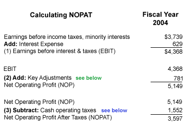
Figure 2 - (numbers are in millions) |
{kind=link}
2. Make the Key Adjustments: Translate Accrual to Cash, and Capitalize Investments
In chapter 2 we explain that adjusting EBIT is twofold and involves (1) converting accrual-based EBIT to a cash-based profit number and (2) capitalizing expenses that ought to be treated as investments. 'To capitalize' is to move an expense to the balance sheet and treat it as a long-term asset instead of a short-term expense - although, here we broaden the term to refer to any adjustment that moves an expense to the balance sheet, becoming either debt or equity.
Finally, as we move through step 2 of the NOPAT calculation, keep in mind that a capitalizing adjustment changes NOPAT and invested capital (will be discussed in chapter 4 where we consider balance sheet changes). The process of capitalizing an expense is a two-way mirror: we must match an income statement adjustment with a balance sheet adjustment.
As you can see from Figure 2, our key adjustments (step 2) together culminate into an addition of $781 million to EBIT, which gives us net operating profit (NOP). From NOP we subtract cash operating taxes (step 3) to achieve NOPAT.
Now, here is the breakdown of the key adjustments (step 2):
|
Figure 3 (numbers are in millions) |
{kind=link}
The adjustment related to LIFO reserve is relevant only to those companies who use LIFO inventory accounting. Disney does not use LIFO, so no adjustment is required here, but it is worth noting the importance of the step for those companies that do use LIFO. If the price of these companies' inventory is rising, then cost of goods sold (COGS) is pushed up because under LIFO, COGS reflects the cost of the recently purchased, more expensive inventory. Adding the increase in the LIFO reserve (as indicated in Figure 3) converts the cost of goods to what it would be under FIFO accounting, which is closer to actual cash flows.
The allowance for bad debt is sometimes very revealing. An increase in this account is not a reduction in (loss of) cash; it reflects a decision to acknowledge additional expenses in anticipation of future cash losses (i.e. a portion of receivables that are not collected). Because its increase represents a paper reduction in profits (not an actual reduction in cash), we add it back to get to the cash-based NOPAT.
In Disney's case, however, we made a reduction of $21 million. Why? Because instead of experiencing an increase, the account decreased over the period, and, a decrease in the allowance for bad debts should be subtracted (just as an increase should be added). In lowering this allowance, management is creating a paper gain, boosting the calculation of profits! But since this boost is not actual cash, we subtract it ("reverse it out") to get closer to the cash-based number.
The 'implied interest on operating lease' is probably the most difficult key adjustment to understand, but if you take the time to grasp the rationale for this adjustment, you'll be well on your way to understanding economic profit. Before studying the adjustment's calculation, we should establish that economic profit translates the operating lease into a capital lease - because economically the two leases are similar (even though they are accounted for differently).
A company gets to treat operating leases as expenses, so, unlike the treatment of capital leases, accounting for operating leases places no liability on the balance sheet. But operating leases are a type of off-balance-sheet financing, so they need to be put back on the balance sheet. This will treat the operating lease like an asset that is funded with a debt-like obligation. But, as this movement to the balance sheet takes place, NOPAT must be credited for the financing component of the lease expense for the same reason that we added back interest expense to 'income before income taxes & minority interests' in step 1.
There are a few ways to get an estimate for the implied interest on an operating lease. Scientific precision is not necessary (unless perhaps you are dealing with a company with a large portion of assets, such as some retail firms). All companies must disclose their future stream of minimum obligations under operating leases, so this disclosure of future obligations - after the obligations are discounted - serves as an estimate of the present value of the obligation. This process is very much like solving the present value of a bond obligation for which we know the cash flows and the interest rate:
|
Figure 4 (numbers are in millions) |
{kind=link}
In our example above, we used a discount rate of 6.76% to convert the reported future obligations into a single present value of $11, 866 million. (Note: this is going to be the debt equivalent that we put back onto the balance sheet in our discussion in chapter 4). As explained in the footnote above, this illustration of PV uses a precise method - the implied interest rate is borrowed from the company's disclosure of its capital lease obligations, but we could also have plugged in our own reasonable estimate.
3. Deduct Cash Operating Taxes
The final step in finding NOPAT is to subtract cash operating taxes (the taxes that a company actually pays with cash) from net operating profits. Truth be told, we could use reported taxes and we would still have a viable economic profit number (although purists would cringe at such a practice). But because in financial reporting, the tax books are separate from the financial statements, the amount that companies pay in taxes may be different than the amount they record as a tax expense. The point in using cash taxes is to capture a true cash return generated from the actual cash investment: what if for some reason our company pays abnormally low taxes in the reported year? Subtracting an estimate of cash operating taxes ensures the NOPAT number isn't "fooled" by reported taxes.
|
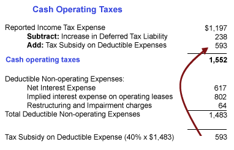
Figure 5 (numbers are in millions) |
{kind=link}
In Figure 5 above we show the underlying calculation for the $1,552 million subtracted in Figure 2. First the increase in deferred tax liability is added to the income-tax expense reported on the income statement (the word "expense" connotes "income-statement item"). The difference between the expense and actual taxes paid is slotted into deferred tax liability, as if it were going to be paid in the future. The deferred tax liability therefore increases when companies pay less in cash taxes than they record on their balance sheet. Because the increase is paper, we subtract it to get closer to actual cash taxes paid.
The addition of the tax subsidy on deductible expenses relates to a principle that should by now be familiar: we want a number that captures tax expenses before accounting for obligations to both debt and equity holders. The expenses listed on the income statement that are "above" pretax income (the deductible non-operating expenses) get the benefit of a tax shield: they reduce the reported taxable income and therefore the income-tax expense. These effects are reversed by the addition of the tax subsidy on deductible expenses [total tax-deductible non-operating expenses x tax rate (%)] to the reported income-tax expense.
After we do this, getting our final number, we see that cash operating taxes are higher than reported taxes.
Conclusion
Although this section drills down on the operating lease and cash operating tax calculations, here's a summary of the general calculation of NOPAT that we demonstrate: start with EBIT, make a set of key adjustments to EBIT and then, to get to NOPAT, subtract an estimate of cash operating taxes that would have been paid under NOP.
Keep in mind this is not a comprehensive set of potential adjustments (at the end of this tutorial we will show a longer list) but, as long as consistency is maintained when invested capital is calculated, the process shown here is a perfectly reasonable economic profit calculation.
EVA: Calculating Invested Capital
By David Harper, (Contributing Editor- Investopedia Advisor)
Calculating invested capital is an important step in finding economic profit because a key idea underlying this metric is charging the company for its use of capital. In order for the company to generate a positive economic profit, it must cover the cost of using the invested capital.
There is more than one way to get to invested capital, but here we use the following three-step method:
- Get invested book capital from the balance sheet.
- Make adjustments that convert accounting accruals to cash.
- Make adjustments that recognize off-balance-sheet sources of funds.
Step 1 - Pulling Invested Book Capital from the Balance Sheet
Let's start by reviewing the balance sheet. Its basic structure says that total assets are equal to the sum of liabilities, plus stockholders' equity:
|
Figure 1 |
{kind=link}
The first problem with pulling a number directly from the balance sheet is that the balance sheet includes items that are not funding sources. And, for purposes of economic profit, we want to include only the company's funds or financing provided by shareholders and lenders. Consider, for instance, short-term debt, which is a current liability. The company borrowed funds, so this does count as a funding source, and as a part of invested capital. But compare this to accounts payable. These are bills or invoices that are owed to the company's suppliers; the suppliers are not really lending funds or investing in the company. As such, accounts payable is not really part of invested capital.
In the chart below, we highlight in green those accounts on the balance sheet that are part of invested capital. You can think of them as coming from sources that expect a return on this capital:
|
Figure 2 |
{kind=link}
One way to calculate invested capital is to add up the green-highlighted liabilities on the right-hand side of the balance sheet. However, it turns out in most cases that the items we want to exclude from invested capital are typically listed in current liabilities. These items we want to exclude are called non-interest-bearing current liabilities (NIBCLS). So a quicker way to calculate invested capital is to start with the left-hand side (the assets) and simply subtract the items on the right that are not part of invested capital. In Figure 2, they include customer advances, accounts payable and accrued liabilities. Because the left-hand side equals the right-hand side, starting with the left-hand side will get us to the same result as adding up all the green-highlighted items.
If you look at Figure 3 below, you will see how this equivalency works. We start with total assets on the left-hand side and subtract the NIBCLS. By this process of elimination, we get to invested book capital:
|
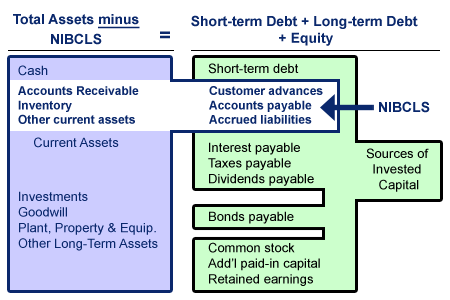
Figure 3 |
{kind=link}
If you are wondering why we don't subtract 'taxes payable', then you are well on your way toward understanding invested capital! You absolutely could exclude taxes payable since the government doesn't really mean to loan or invest in the company. Actually, including taxes payable is a judgment call. Many analysts let this item remain as a source of invested capital (as we did here) because most companies never pay these deferred taxes. These taxes are perpetually deferred, and for this reason, some call them "quasi equity". If the company were going to pay these taxes, we would exclude taxes payable from invested capital, but since the company - in practice - is going to hold onto the extra cash, we are going to charge them for the use of it.
Now let's perform this calculation on Disney. Below in Figure 4 we show the result of subtracting the non-interest-bearing current liabilities from total assets:
|
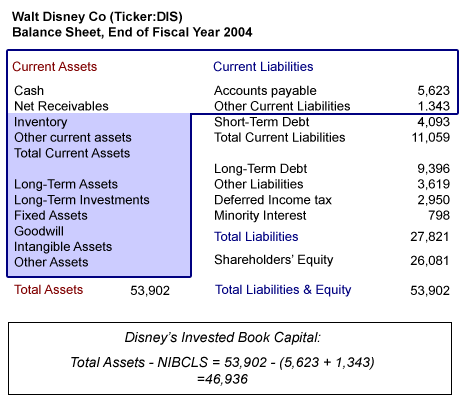
Figure 4 (numbers are in millions) |
{kind=link}
Importance of Consistency Between NOPAT and Invested Capital
Notice that, among the liabilities, a minority interest account of $798 million is included in our invested capital number (i.e. we did not exclude it). This minority interest represents partial interests in Disney subsidiaries held by other companies. For example, Disney may own 90% of a subsidiary, while another company owns the other 10%. When the balance sheets are consolidated (or "rolled up"), all of the assets are included in Disney's balance sheet, even though 10% of this subsidiary's assets belong to another company. A minority interest account equal to this other company's ownership in the subsidiary is therefore created; this minority interest effectively reduces Disney's equity account accordingly.
So why did we include this equity account in invested capital? The reason is the first economic profit principle discussed in chapter 3: the most important thing is consistency between net operating profit after taxes (NOPAT) and invested capital. The return number (NOPAT) must be consistent with the base number (invested capital). And when we calculated NOPAT, we started with EBIT, which is before (or "above") the minority interest deduction on the income statement - in other words, our NOPAT number is not reduced by the minority interest. So to be consistent, we do not reduce our invested capital by the minority interest.
It would be acceptable, although less common, to subtract minority interest from NOPAT and exclude it also from the invested capital calculation. The important thing to keep in mind is the consistency principle, which can solve many of your dilemmas concerning economic profit adjustments: ask if you included or excluded the account from the NOPAT number and treat the adjustment similarly when working with the balance sheet.
Steps 2 and 3 - Making the Cash and Balance Sheet Adjustments
Now that we have calculated invested capital, we have only to make the other two types of adjustments: cash flow adjustments and off-balance-sheet adjustments. Here again, we are guided by our previous decisions in regard to NOPAT. As a reminder, Figure 5 shows the adjustments we already made in chapter 3:
|
Figure 5 (numbers are in millions) |
We are going to match these adjustments on the balance sheet. First, in regard to converting accrual to cash, our goal is simply to adjust the balance sheet to get closer to cash. Second, in performing the important step of capitalizing debt/equity equivalents, our goal is to capture investments or debt obligations that - for whatever reason - are not currently on the balance sheet.
Disney has many operating leases that are economically equivalent to long-term capital leases and therefore represent a debt obligation (note we already did the calculation in chapter 3, where we estimated the present value of these lease obligations at $11,866 million). In the worksheet below in Figure 6, we perform the cash flow adjustments and off-balance-sheet adjustments:
|
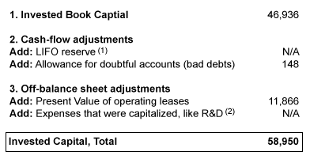
Figure 6 (numbers are in millions) 1. Only applies if company uses LIFO inventory accounting 2. This is an important idea: if the firm expensed R&D, we want to capitalize it as an asset. This simply treats the money spent as if it were spent on a long-term asset like a manufacturing plant. |
{kind=link}
See how our adjustments to invested capital matched our adjustments to get to NOPAT. In both cases, we adjusted for the allowance for bad debt - because it is a paper reserve that does not reflect cash received. In both cases, we treated operating leases like capital leases by adding back the interest component and putting the obligation back onto the balance sheet.
Our worksheet above shows two 'N/As' because, although they do not apply in Disney's case, they are often significant in the economic profit calculation. First, if Disney had a LIFO reserve, we would add that to the invested capital base. Second, if research and development were expensed, we would capitalize it, that is, add it to the balance sheet and thereby treat it as an asset with a long-term payoff. In the next chapter, we itemize a full set of generic adjustments for all situations.
So, for making Disney's cash and balance sheet adjustments, only two additions are needed to arrive at an invested capital base of $58,950 million. This number represents a reasonable estimate of the assets that are funded by debt and equity sources.
Summary
Invested capital, which we calculated here, reflects an estimate of the total funds held on behalf of shareholders, lenders and any other financing sources. A key idea in economic profit is that, in the calculation, a company is charged "rent" for the use of these funds. Economic profit then represents all profit in excess of this rental charge.
EVA: Pulling It All Together
By David Harper, (Editor In Chief - Investopedia Advisor)
By working through the components of economic profit over the previous chapters, we've been building an economic profit calculation for Disney. Now it's time we pull together these components into the formula to arrive at the final number.
The Formula
As a reminder, here is the basic economic profit calculation:
Economic Profit = NOPAT - Capital Charge (Invested Capital x WACC)
Economic profit is NOPAT minus a capital charge, which represents a sort of rental fee charged to the company for its use of capital. In other words, economic profit is the profits (or returns) our company must generate in order to satisfy the lenders and shareholders who have "rented" capital to the company. Keep in mind that economic profit is a period metric, like earnings or cash flow. In our case, we are referring to Disney's economic profit over the 2004 fiscal year.
The only step that we need to perform before the ultimate economic profit calculation is to estimate the capital charge.
As a reminder, here is the basic economic profit calculation: Economic Profit = NOPAT - Capital Charge (Invested Capital x WACC) Economic profit is minus a capital charge, which represents a sort of rental fee charged to the company for its use of capital. In other words, economic profit is the profits (or returns) our company must generate in order to satisfy the lenders and shareholders who have "rented" capital to the company. Keep in mind that economic profit is a period metric, like earnings or cash flow. In our case, we are referring to Disney's economic profit over the 2004 fiscal year. The only step that we need to perform before the ultimate economic profit calculation is to estimate the capital charge.
Capital Charge Equals Invested Capital Multiplied by WACC
We already calculated invested capital in chapter 4. Now we need to estimate Disney's weighted average cost of capital (WACC). This is the average return expected by the blended investor base. In order to calculate WACC, we need a cost of debt and a cost of equity.
Cost of Debt
The cost of debt can be found on the 10-K footnotes. In Disney's case, however, we need to make an estimate because the company relies on several different types of debt. We can make this estimate by looking at its long-term debt rating (at the time of the annual report, Disney's Standard and Poor's long-term debt rating was 'BBB+', which is medium grade). Disney's debt rating corresponds to a debt cost of about 5%. (Note that this will be higher than the risk-free rate since it is a corporate bond with credit risk.)
This 5% rate, however, is a pretax cost of debt - companies can deduct interest expense from their tax bill, and reap a true cash benefit. The after-tax cost of debt is therefore lower. To obtain this number we multiple the pretax cost of debt by the so-called tax shield or (1-tax rate). Disney's 2004 effective tax rate is 32%, so the tax shield is 68%, and the after-tax cost of debt equals 5% multiplied by 68%, or 3.4%.
Cost of Equity
Unlike the cost of debt, which is explicit and can be referenced, the cost of equity is implicit: shareholders expect returns on their investment, but unlike interest rates, these returns are neither uniform nor decided or set.
Because of cost of equity's theoretical basis, there are several methods for calculating it. Here we use the capital asset pricing model (CAPM), which is a traditional method but subject to much criticism. In the CAPM, the expected return is a function of one factor only: the presumed risk of the stock as implied by the equity's beta. A higher beta implies greater risk which, in turn, increases the expected return - and the expected return is the same as the cost of equity. (Expected return is simply the view from the investor's perspective while cost of capital is the same number from the company's perspective.)
The CAPM formula says the following:
Cost of Equity = Risk-Free Rate + (Beta x Equity Premium)Let's look briefly at the different elements of the equation. Beta, as a measure of risk, is a measure of the stock's sensitivity to the overall market. A beta of 1.0 implies the stock will track closely with the market. A beta greater than 1.0 implies the stock is more volatile than the market. Disney's beta at the end of the fiscal year was 1.15. This implies slightly more risk than the overall market, on both the upside and downside.
The equity premium is the overall average excess return that investors in the stock market expect above that of a risk-less investment like U.S. Treasury bonds, which for our calculation is 4%. There is always vigorous debate over what the correct equity premium is (for more on the calculation and debate, see the article series The Equity Risk Premium.) We will use an equity premium of 4%, which is middle of the road as some would argue this is too high and some might argue it is too low.
By using the CAPM formula, we add 4.6% (a 4% equity premium x 1.15 beta) to a risk-less rate of 4%. Our estimate for Disney's cost of equity capital therefore equals 8.6%.
The calculations for both Disney's cost of debt and cost of equity are illustrated below in Figure 1:
| 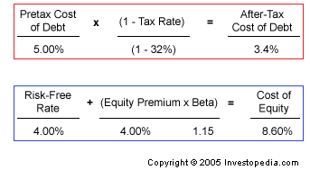 Figure 1 |
{kind=link}
Now we can calculate the WACC. To do this, we simply multiply the cost of debt and equity by their respective proportions of invested capital, and then add the two resulting numbers together.
The proportion of debt and equity depends on the total dollar amount of each, and this information we can find on Disney's 2004 balance sheet. If we add up the debt (i.e. long-term debt plus short-term debt plus other liabilities), we get $17.11 billion. The market value of the equity (market capitalization) is $56.962 billion. Debt is therefore 23% of invested capital and equity is 77%. (Note we used the book value of debt - debt from the balance sheet - but we used the market value of equity. Theoretically, we want the market value of both. But it is much easier to get the book value of debt, and it typically tracks very closely to the market value, so we were satisfied to use book value.)
In Figure 2 below, we multiply each type of cost of capital (calculated in Figure 1) by its respective proportion of total capital. Then we add the two weighted costs together to arrive at WACC.
| 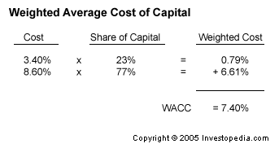 Figure 2 |
{kind=link}
The WACC and Debt-to-Equity Relationship
You may have already noticed that debt is cheaper than equity. There are two reasons for this: first, the pretax cost of debt is lower because it has a prior claim on the company's assets. Second, it enjoys the tax shield (i.e. it is a tax-deductible charge), which is why a balance sheet totally devoid of debt may be suboptimal. Because debt is cheaper, by swapping some equity for debt, a company may be able to reduce its WACC.
So why not swap all equity for debt? Well, that would be too risky; a company must service its debt, and a greater share of debt increases the risk of default and/or bankruptcy. In Figure 3 below, we graph estimates of WACC for Disney at different debt-to-equity ratios. At a debt-to-equity ratio of 0.9, the graph plots a minimum value. In theory, this would be Disney's optimal capital structure because it minimizes their cost of capital - after 0.9, higher ratios begin to produce a higher WACC. But, this is merely theoretical and depends on our assumptions.
| 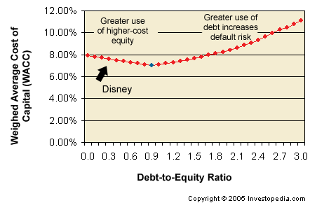 Figure 3 |
{kind=link}
The Economic Profit Calculation
We now have all of the elements to perform the final economic profit calculation, which is the subtraction of a capital charge from NOPAT. The capital charge is invested capital multiplied by WACC (a percentage). This is all shown below in Figure 4:
|
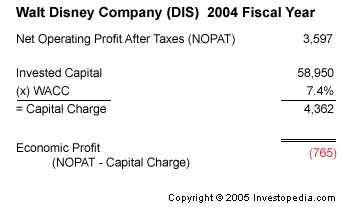
Figure 4 (numbers in millions) |
{kind=link}
The economic profit number tells us that, despite generating $3.597 billion in after-tax net operating profits, Disney did not quite cover its cost of capital. Of course, it fully serviced its debt, but the point of economic profit is to charge the company for the use of equity capital – when we incorporate this cost, we find that Disney lost (some would say "destroyed value") $765 million in economic profit over the year.
Summary
In this installment, we performed the final economic profit calculation, pulling together the components we explored and calculated throughout this tutorial. We started with NOPAT (calculated in chapter 3). Then we estimated invested capital (chapter 4). In this chapter we then estimated the capital charge by multiplying invested capital by the weighted average cost of capital. Finally, we subtracted the capital charge from NOPAT in order to get economic profit over the one-year period.
EVA: What Does It Really Mean?
As we performed a sequence of calculations to find Disney's (DIS) 2004 economic profit, we discovered that despite positive accounting earnings, the company produced negative economic profit. Now that we've gone over the components of economic profit and the steps to finding it, in this chapter, we want to achieve three things: (1) itemize a list of core adjustments you should consider if you want to calculate economic profit for a company, (2) put into perspective the economic profit metric by comparing it to alternative metrics and (3) consider the key strengths and weakness of the economic profit metric.
The Recap
Now that you've viewed economic profit in action, you've likely observed that most of its perceived complexity results from two types of adjustments that convert accounting earnings into net operating profit after taxes (NOPAT). The goal of these adjustments is to translate an accounting profit into an economic profit that more accurately reflects cash invested and cash generated. The illustration below recaps the process.
|
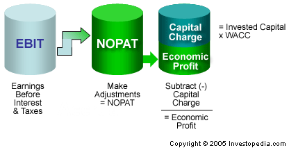
Figure 1 |
{kind=link}
To make the conversion, we can start with any income statement line, but it is easiest to start with earnings before interest and taxes (EBIT). Then we make two types of adjustments in order to convert EBIT into NOPAT. First, we reverse accruals to capture cash flows, and second, we capitalize expenses that ought to be treated like investments. Once we have NOPAT, we need only to subtract the capital charge, which is equal to total invested capital - which we find by making appropriate adjustments to invested book capital, found on the balance sheet - multiplied by the weighted average cost of capital (WACC).
The Core Adjustments
Remember the importance of being consistent throughout the course of your calculations: always match an income statement adjustment - in getting NOPAT - to a corresponding balance sheet adjustment - in getting invested capital. This is more important than the number of your adjustments!
The "perfect" economic profit calculation is fully loaded; that is, it captures every dollar of invested capital and makes every adjustment to determine the precise level of cash flow. But the need for a perfect economic profit number is questionable. Many academic studies have demonstrated that the incremental information gained beyond a handful of key adjustments is minimal. You are therefore okay to use a few adjustments to arrive at an approximation.
The table below shows a list of selected core adjustments. Each income statement adjustment in the left-hand column helps to convert EBIT to NOPAT; each corresponding balance sheet adjustment in the right-hand column helps convert book capital to invested capital.
| 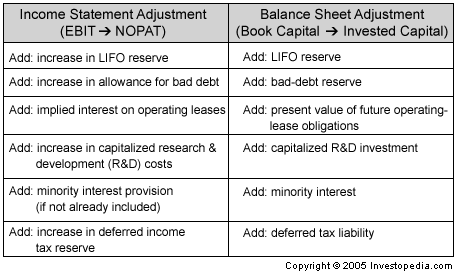 |
{kind=link}
Putting Economic Profit into Perspective
To determine what economic profit tells us as an analytical tool for investors, we need to compare it to several other popular metrics. Let's start by determining the levels of analysis: does the metric capture dollars created for the entire entity (both lenders and shareholders) or only the shareholders, or does it capture excess (residual) dollars created for both shareholders and lenders? Figure 2 below summarizes which levels of analysis the different types of valuation metrics occupy, and it indicates which are performance metrics and which are wealth metrics.
|
Figure 2 |
{kind=link}
| 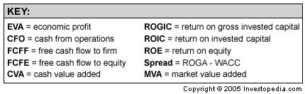 |
{kind=link}
In Figure 2, the levels of analysis are labeled across the top row. Under entity, we show two columns of metrics: before reinvestment and after reinvestment. These columns distinguish between those metrics that include capital expenditures and those that don't. For example, EBITDA is before depreciation and amortization (D&A) and therefore is before the non-cash charge that reduces earnings by the amortized investment. But EBIT is after D&A and, although not cash based, does recognize a charge for investments.
Down the left-hand side we have three rows of performance metrics and one row of wealth metrics. The first row of performance metrics shows accrual metrics, which are based on accounting flows, and below each accrual metric is the cash flow metric analog based on the same level of analysis. For example, the cash flow analog to EBIT is free cash flow to the firm (FCFF). EBIT is the earnings that accrue to both shareholder and lenders - in other words, it accrues to the entire entity or enterprise. And FCFF is the equivalent in cash flows.
By looking at the chart, you may be asking yourself what the difference is between economic profit and cash value added (CVA), both of which are residual dollar returns. Despite its use of adjustments, economic profit is essentially accrual based. Consider NOPAT's inclusion of - or put another way, reduction by - depreciation and amortization, which are non-cash charges. So, whatever adjustments we make, we are still incorporating accruals. CVA, on the other hand, is a metric designed to correct/reverse this by adding back the non-cash charges of depreciation and amortization.
Figure 2 also shows how the performance metrics - whether capturing enterprise, shareholder or residual dynamics - have corresponding return metrics and wealth metrics. Return on gross invested capital (ROGIC), for example, corresponds to EBITDA because it adds back depreciation to capital in the denominator - ROGIC is before D&A just as EBITDA is before D&A. (ROGIC is similar to return on gross assets (ROGA).)
Economic spread, which expresses economic dollars in percentage terms, is the returns-metric analogue to economic profit. To understand this, we simply rearrange our basic economic profit calculation:
| Economic profit = NOPAT - [WACC × Invested Capital] (NOPAT = ROIC × Invested Capital)
Therefore Economic profit = [ROIC × Invested Capital] - [WACC × Invested Capital] Economic profit = [ROIC - WACC] × Invested Capital |
The difference between return on invested capital (ROIC) and the weighted average cost of capital is the economic spread: spread = [ROIC – WACC].
Strengths and Weaknesses of Economic Profit
The map of metrics above helps us to understand that economic profit it is one of several valid performance measures, each of which offer a different type of insight into a company. Economic profit's strengths include the following:
- Because it is a residual performance metric, it conveniently summarizes into a single statistic the value created above and beyond all financial obligations
- By applying a capital charge, it corrects the key deficiency of earnings and earnings per share (EPS): they do not incorporate the balance sheet. Economic profit explicitly recognizes - by way of the capital charge - that capital is not free and, if growth is purchased with capital, economic profit recognizes that the growth is not free and assigns a charge for the capital used to purchase the growth.
- As an operational metric, it helps managers clarify how they create value. Generally, they do it either by investing additional capital that produces returns above WACC, by reducing capital employed in a business, by improving returns by growing revenues or reducing expenses or by reducing the cost of capital.
- Unless fully loaded and all cash adjustments are made, economic profit can be subject to accrual distortions. For example, because NOPAT is after depreciation and amortization, a company that does not reinvest capital to maintain its plant and equipment can improve its accrual bottom line simply by virtue of the declining D&A line. This sort of attempt at boosting economic profit is known as harvesting the assets.
- It has the limitations of any single-period, historical metric: last year's economic profit will not necessarily give you an insight into future performance. This can be especially true if a company is in a turnaround situation or makes a large lump-sum investment, in which case, economic profit will immediately suffer (due to the higher invested capital base) but the expected future period payoff will not show up as a benefit in the calculation.
EVA: Conclusion
Economic profit - otherwise known as "Economic Value Added" (EVA™) is based on classic financial theory, and, for this reason, is not entirely different from traditional free cash flow measures. Three conceptual pillars support economic profit:
- Cash flows are more reliable than accruals.
- Some period expenses are - in economic reality - actually long-term investments.
- The company does not create value until a threshold level of return is generated for shareholders.
As you perform your own economic profit calculations, keep the following in mind:
- Economic profit boils down to a set of adjustments that translate an accrual-based earnings before interest and taxes (EBIT) into a cash-based net operating profit after taxes (NOPAT).
- Although the list of potential adjustments is long, it is important not to be seduced into an almost-impossible quest for absolute precision. From an investor's perspective, consistency is more important. That is, an income statement adjustment should always be matched by a balance sheet adjustment. For example, if we add back minority interest to earnings, then we need to add the minority interest balance sheet account to invested capital. We can add neither or both, but there is no truly right answer. In this example, it comes down to whether we prefer our economic profit to have an operational perspective (add both) or a financial perspective (add neither).
- Avoid seeking precision in the calculation of weighted average cost of capital (WACC), a dubious academic exercise. It is far better to charge the company with an approximate but consistent estimate of WACC than to try to chase down the elusive cost of equity. (Several companies, after trying to explain a precise WACC to employees, have come to abandon a precise WACC in favor of a round number like 10%; e.g. "cost of capital is 10%".)
Strengths
- If you had to rely on only one single performance number, economic profit is probably the best because it contains so much information (mathematicians would call it "elegant"): economic profit incorporates balance sheet data into an adjusted income statement metric.
- Economic profit works best for companies whose tangible assets (assets on the balance sheet) correlate with the market value of assets - as is often the case with mature industrial companies.
- Although some proponents argue economic profit is "all you need", it is very risky to depend on an single metric.
- The companies least suited for economic profit are high-growth, new-economy and high-technology companies, for whom assets are 'off balance sheet' or intangible.